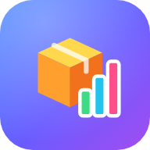

กำลังเชื่อมต่อระบบ…
วางลิงก์ระบบ TWC Warehouse (Web app ที่ลงท้ายด้วย /exec) ขอจากผู้ดูแลระบบ หรือคัดลอกจากหน้า ตั้งค่า ในระบบ
TWC Warehouse ต้องใช้อินเทอร์เน็ตเพื่ออัปเดตสต๊อกแบบเรียลไทม์ ตรวจ Wi-Fi หรือเน็ตมือถือ แล้วลองใหม่
ระบบยังไม่ตอบกลับ อาจเป็นเพราะสัญญาณอินเทอร์เน็ต หรือลิงก์ระบบไม่ถูกต้อง